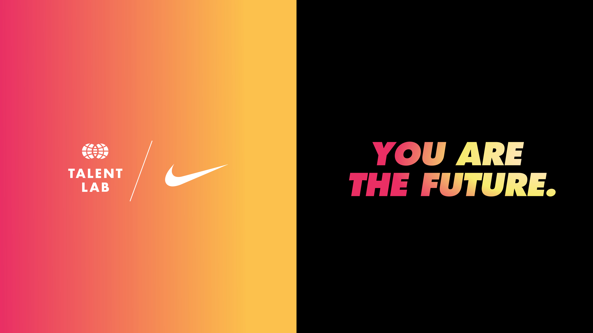
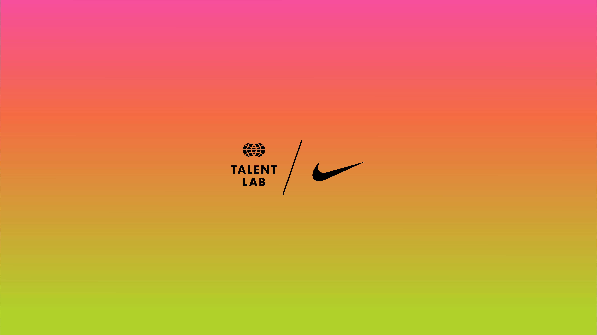
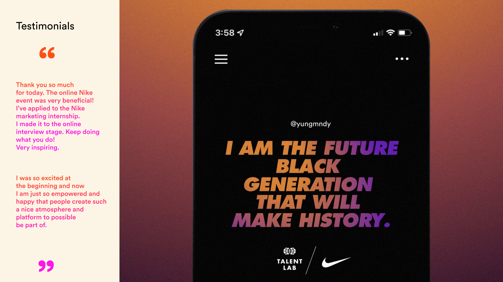
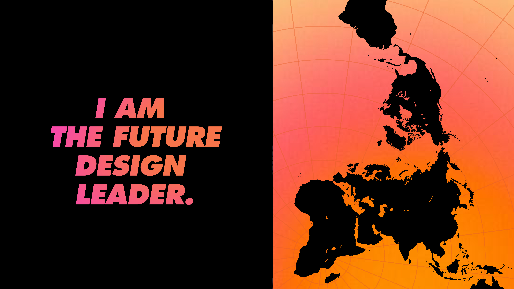
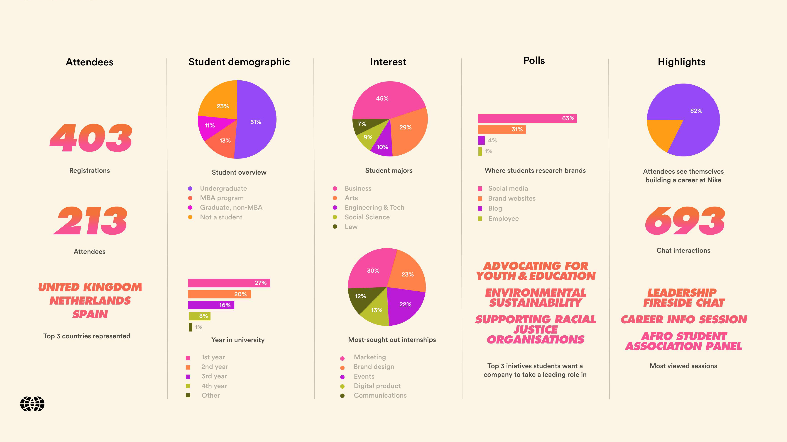
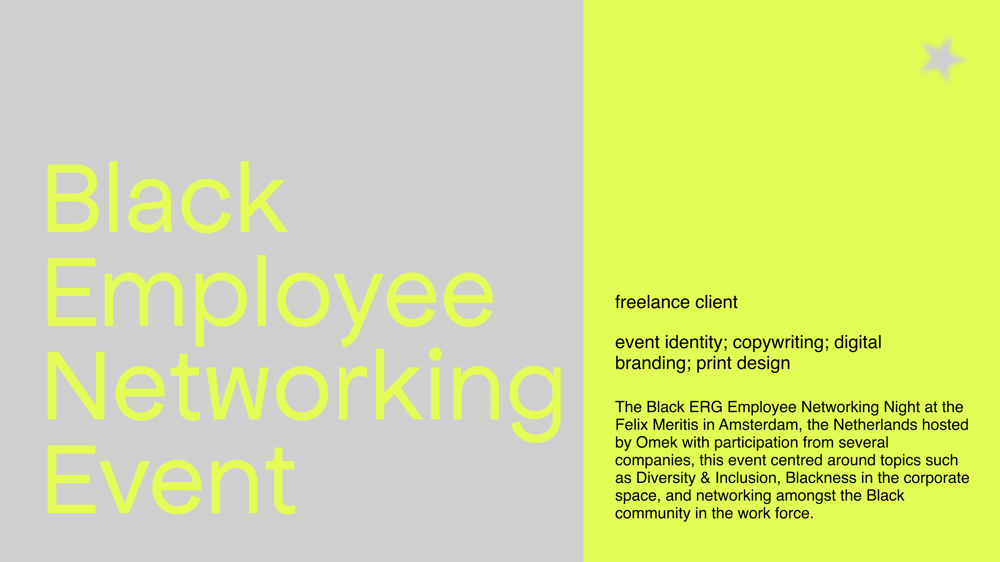
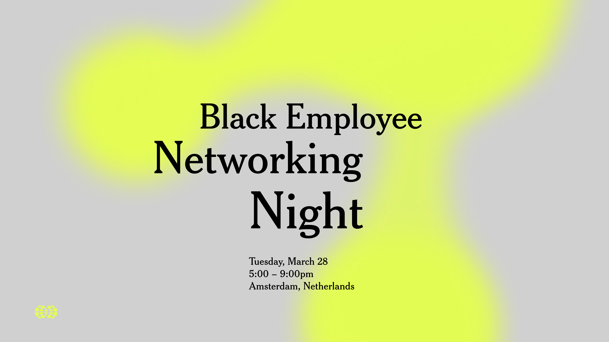
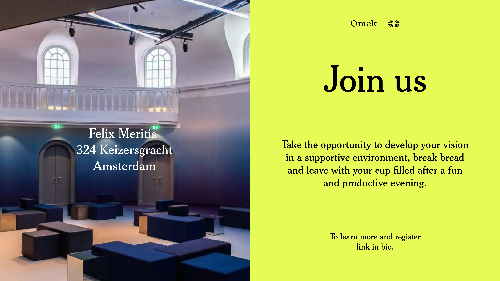
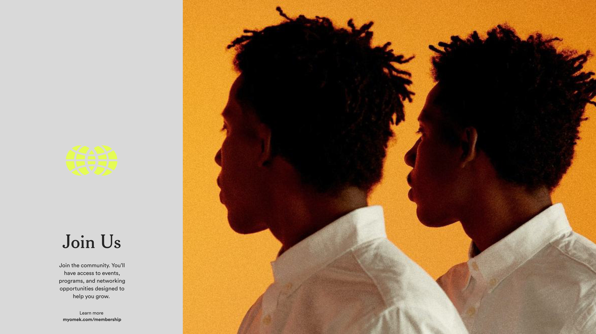
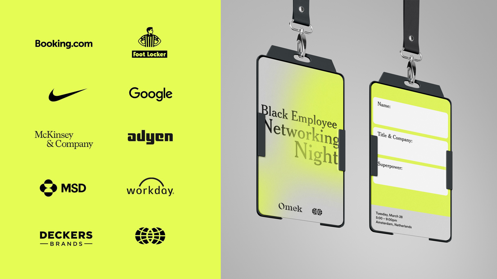

A passionate graphic designer and marketing creative with a mixed Italian and Congolese heritage. My global upbringing across Africa, Asia, Europe, and South America fuels my creativity and influences my design philosophy. areas of design: graphic design; visual identity development; branding; digital marketing; copywriting. languages: english, french, italian, spanish skills: adobe CC; Figma; Later; SEO copywriting; Google Analytics
↓
Fashion For Good: What Goes Around Comes Around





The Amsterdam based exhibition hosted by Fashion for Good: News From the Future highlights the creative works of up and coming fashion students and designers working with cotton. Alongside the event identity, my responsibilities included designing the physical space in terms of graphic work. Identifying the key elements of the exhibition in order to showcase the young talent.
PVH Poster Series: GOODEEDS Archive





Alongside Aika Cherdabayeva, we developed a visionary platform concept with the purpose of overcoming boundaries that often alienate young artists and designers from non-white, cis, male environments. This platform serves as a space to create a directory of talented creatives from underrepresented communities, promoting inclusivity and providing them with greater visibility.